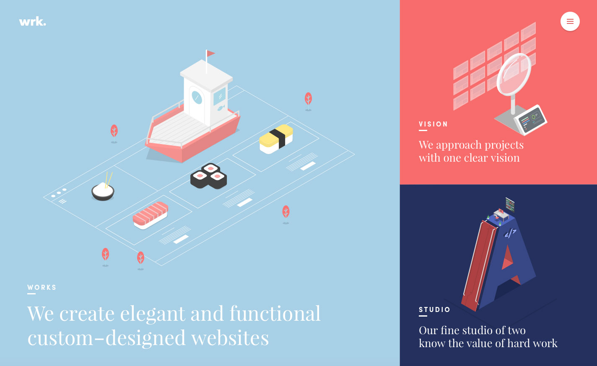
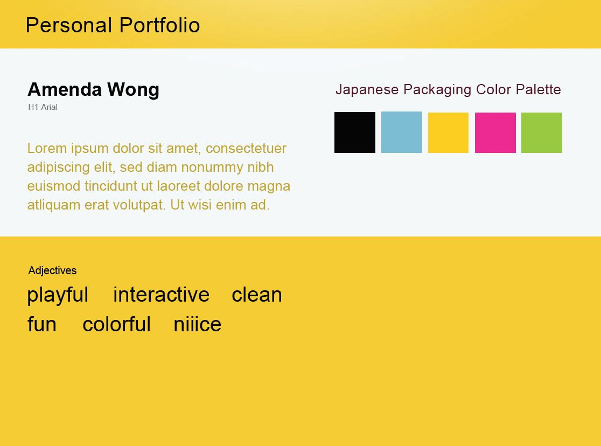
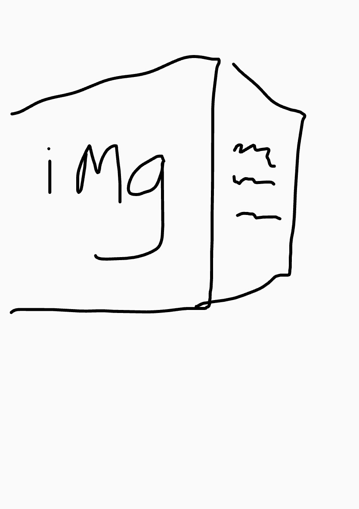
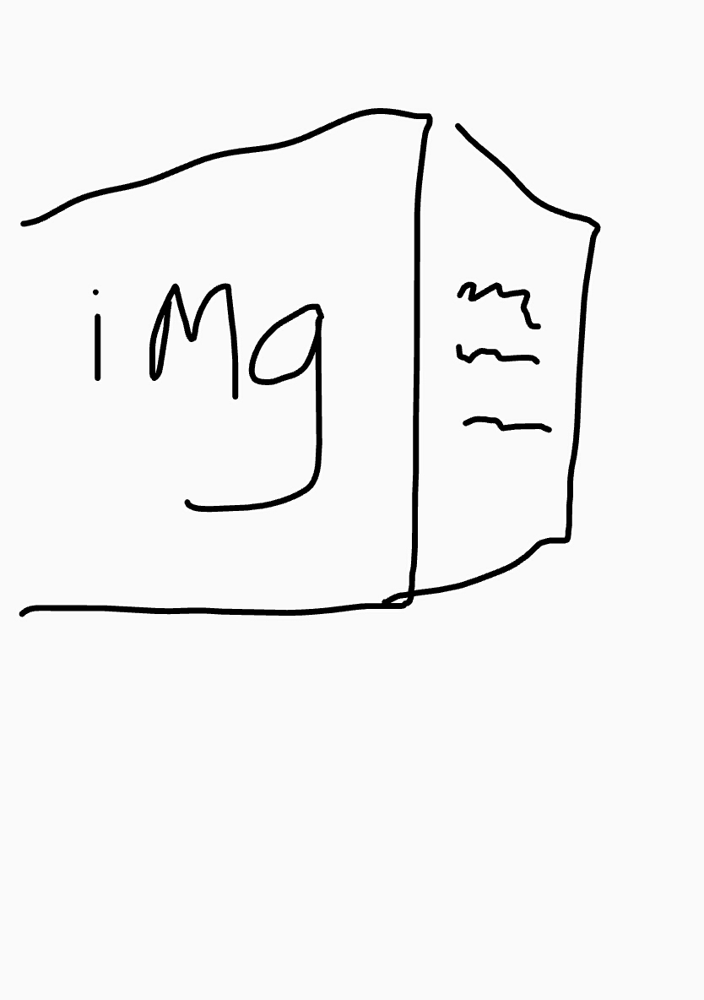

method digital

I already have a personal portfolio website but I would like to work on it and have more control and experiment with more fun and animated elements. I would like to include it on job applications so they can see different types of my work and not just school assignments. So it will include informal but interesting work. There are definitely amazing websites out there but I don't necessarily use them as inspiration because my skill level is yet that impressive. I'm going to focus more on the experience of the website more than making content, but overall, I will try to have fun with the possibilities.
A really cute and heavily animated website also on my student page.
method digital
Architecture Diagram:
Wireframes:
Style Tile:
Wireframe Sketches:

 
